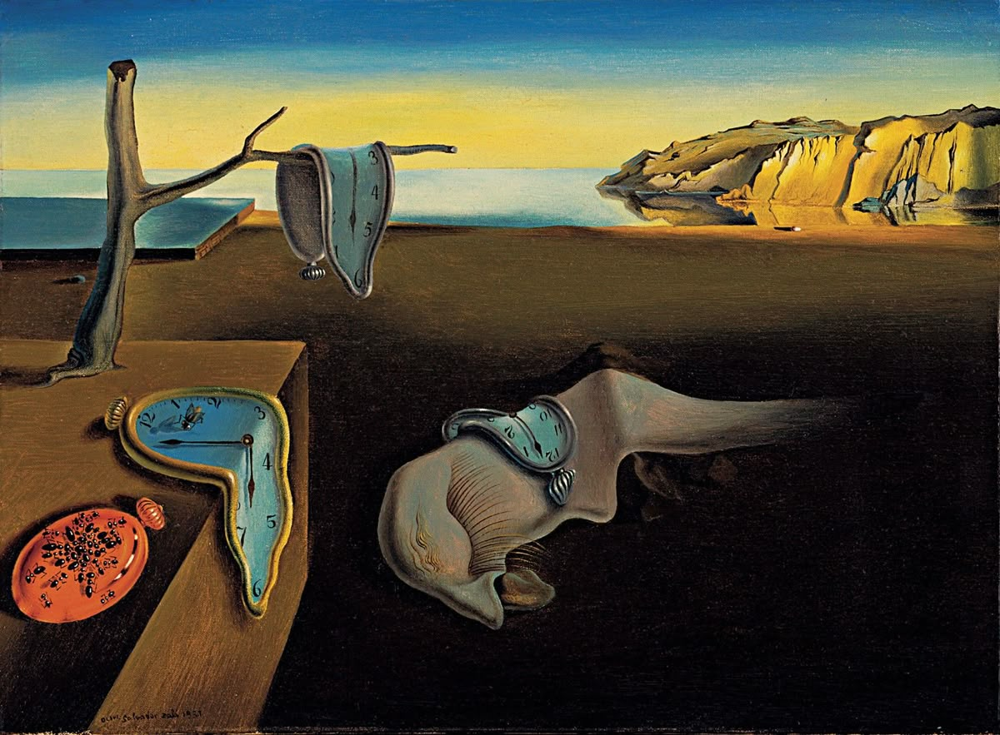

Semana da arte moderna · 1922
Salvador Dalí
Um convite para atravessar o tempo e o universo onírico de um dos grandes nomes do surrealismo.
A persistência da memória

Uma paisagem silenciosa onde os relógios parecem perder a rigidez do tempo.
A obra "A persistência da memória" é uma das mais icônicas do movimento surrealista, criada por Salvador Dalí. Ela desafia a percepção do tempo e da realidade, apresentando relógios derretidos em um cenário desolado. A pintura convida o espectador a refletir sobre a natureza efêmera do tempo e a fragilidade da memória, elementos centrais na filosofia surrealista.